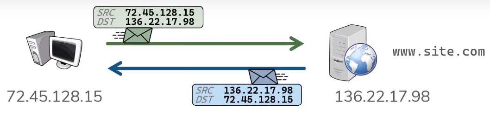
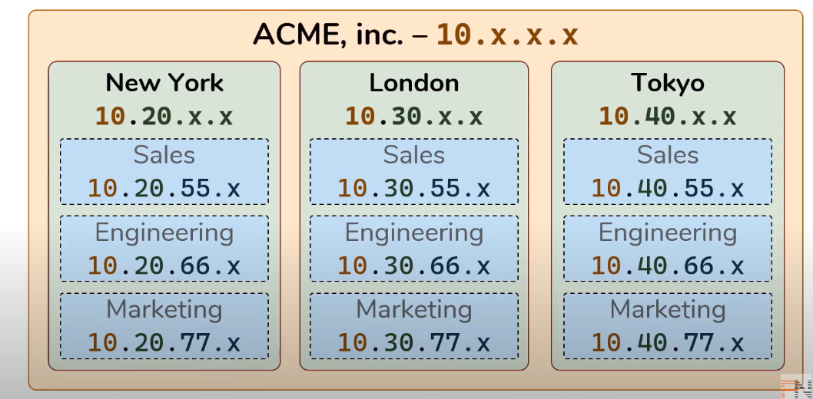
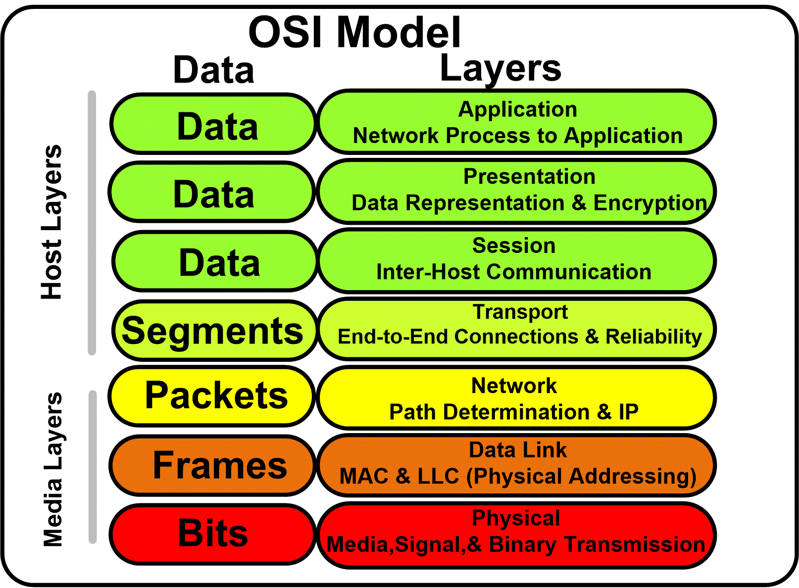
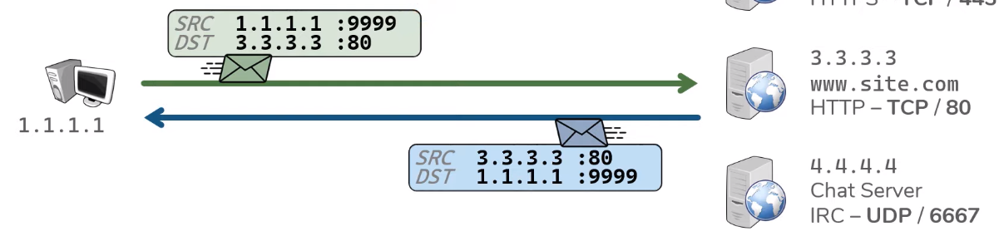
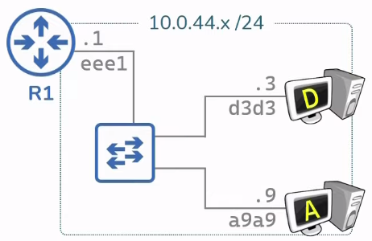
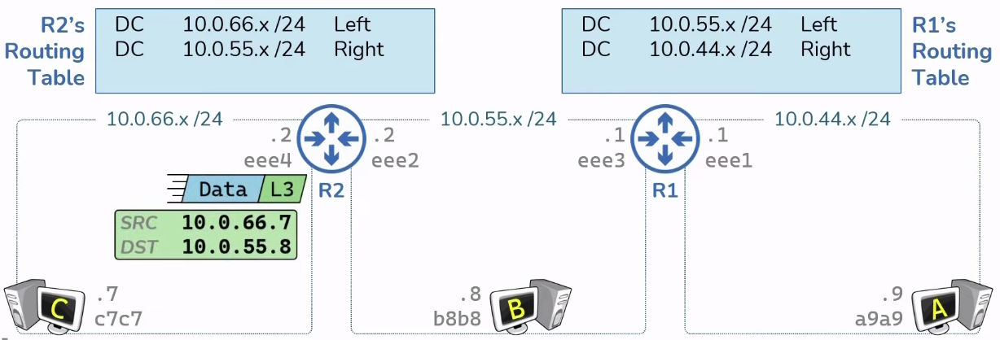
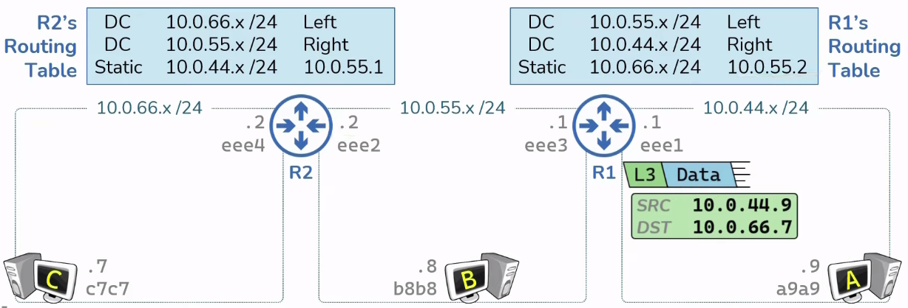
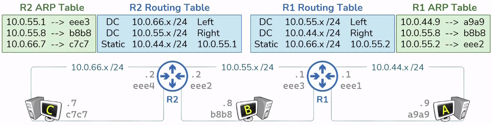

* Not mobile friendly yet *
Network Devices
Network Devices Part 1
Host
Host are any device which sends or
receive traffic.
(Examples : Computers, Phones, smart TVs, smart watches, etc)
Host typically fall in two categories clients or
servers. Clients initiate request servers
respond. These terms are relative to specific communication.
(A server is a computer with software installed
which responds to specific request)
IP Address
An IP Address is the identity of each host.
An IP address is needed to send or
receieve packets on a network.
IP addresses get stamped on everything
that each host sends.

For example when a client makes a web request to site.com, it
sends a packet which includes what web page it is asking for, as
well as a source ip address, and a destination ip addresses.
The source ip address is going to be the client's ip address,
and the destination ip address is going to be the server's ip
address.
IP addresses are typically assigned in some sort
of hierachy.

Network
A network is what actually does the transportation of
traffic between hosts. In it's simplest form anytime you connect
two hosts you have a network.
Before networks in order to transfer data between hosts required
portable media (disks, thumb drives, etc...).
A network is really just a logical grouping of hosts which
require similar connectivity. Networks can contain other
networks which is reffered to as Sub-Networks (Subnets).
Instead of having networks connect directly to each
other in every possible combination, networks are connected
to a central resource, the internet which is simply
a bunch of interconnected networks, networks connected
to other networks.
Network Devices Part 2
Repeater?
Repeaters regenerate signals
Hub
Hubs are multiport repeaters.
Bridge
Bridges sit between HUB connected hosts.
Switch
A switch facilitates communication within a
network.
Routers
A switch facilitates communication between a
networks.
Gateway
A gateway is each hosts way out of their network.
OSI model
Intro
The purpose of networking is to allow
two hosts to share data with one another.
Networking allows us to automate all this
across the wire. Hosts must follow a set of rules
in order to achive this.
Networking also has its own set of rules, the rules
for networking are divided into seven different layers
known as the OSI model.
OSI is simply a model, NOT RIGID.

1) Physical ; Transporting bits ; Cables, Wifi, Repeaters, & Hubs
2) Data Link ; Hop to hop ; NIC, MAC Address, Routers, Switch
3) Network ; End to end ; IP Address
4) Transport ; Service to Service ;
Two common address schemes to distinguish dates streams
are TCP & UDP which are ports.
TCP favors reliability. UDP favots efficiency.
Port #s range from 0-65535.
Servers listen for request to pre-defined ports.
Clients make request to the IP address & to the port # in question.
Clients also select a random source port for each
connection.
When a packet is initially send from a client it
includes a Source (SRC) & Destination (DST)

??This process occurs for each connection made the client
the client. In each case the client is searching a new
random source port.
Ports ensure that the right application gets the
right data. THis process also allows the client to make
multiple connections to the sme server.
(exp : when client/browser opens a new tab, a new random
source port is created.)
?Encapsulation
?The construct of a L2 header & its ensuing data is known
as a frame.
Physical Layer
Everything Hosts do to speak on the Internet Pt1
Everything Switches do to speak on the Internet Pt1
Everything Routers do to speak on the Internet Pt1
Intro
.xxx (IP address)
.xxx (MAC address)

Switches facilitates communication within a network(review).
A node is a device the implements IP.
A router is a node that forwards IP packets not
explicitly to itself.
A host is any node that is not a router.
A router forwards packets not destined to themselves.
Routers are connected to a network by having
an IP & MAC address on each interface (network).
To do this routers must have a routing table corrilating
to each route in each network.
Each route has its own routing table.
Routers use the routing tables to send packets.
Routing tables can be populated via 3 methods ;
Directly Connected, Static Routes,
& Dynamic Routers.
Directly connected are routes for the Network which are
attached.
When routes receive packets with an unknown destination IP,
packet is dropped.

Static routes are routes manually
provided by an administrator.

Everything Routers do to speak on the Internet Pt2
Intro
ARP is the mapping of known IP address to unknown
MAC address.
Routers have ARP Tables, mapping of L3 to L2 address.
(Everying with an IP address has an ARP Table)

ARP Tables start empty & get populated dynamically
as needed with network traffic.
How packets are sent? (HostA -> HostC)
How hosts respond (HostC -> HostA)
Routing Hierachies & Route Summary
Intro
Routers are typically connected in a hierachy.
Hierachy routers are easier to scale and allow
for route summarization


Subnetting
...
A default route is the ultimate route.

Network Protocols
Intro
A protocol is a set of ules and messages that form an Internet standard.
How Data moves through the Internet
Intro
TCP & UDP
Intro